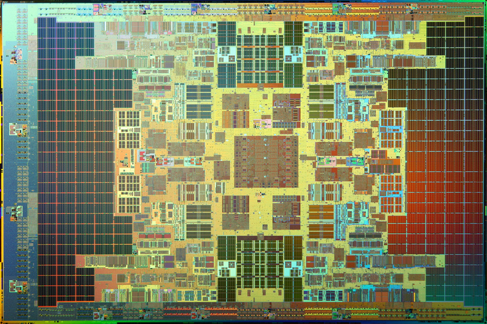

Today's hardware is much more advanced than the software.
While cooperation amongst our computer scientists is important, the tools we use are as well, as they can either facilitate progress, or impede it. The purpose of this chapter is to explore the biggest technical reason why people distrust computer technology today. Many of the problems that frustrate users, such as crashes, security violations, code bloat, and the slow pace of progress, are directly related to the software used to create our software.
In fact, the last hardware bug anyone remembers was the Intel floating point division bug in 1994 — nearly all the rest are software bugs.1
The problem is this: the vast majority of today's code is written in C, a programming language created in the early 1970s, or C++, created in the late 1970s. Computers always execute machine language, but programming these 1s and 0s are inconvenient in the extreme, so programmers create high-level languages and compilers that convert meaningful statements to machine code. We are asking the same tools used to program the distant computer ancestors to also program our iPods, laptops, and supercomputers, none of which were even conceived of back then.
Imagine building a modern car with the tools of Henry Ford. A tool ultimately defines your ability to approach a problem. While the importance of cooperation in solving big problems is a major theme of this book, the current set of tools are stifling progress. A complete unified set of libraries will change computing even more than the worldwide adoption of the Linux kernel.
Metcalfe's law has unfortunately applied to C and C++; people use them because others use them. These languages became so dominant that we never moved on from our 1970s heritage. Programmers know many of the arguments for why newer languages are better, but paradoxically, they just don't think it makes sense for their codebase right now. They are so busy that they think they don't have time to invest in things that will make their work more productive!
Corporations today are struggling with the high costs of IT, and many feel pressure to outsource to places like India to reduce the costs of maintaining their applications. However, outsourcing doesn't decrease the manpower required to add a feature, it only reduces the cost, so this is merely a band-aid fix.